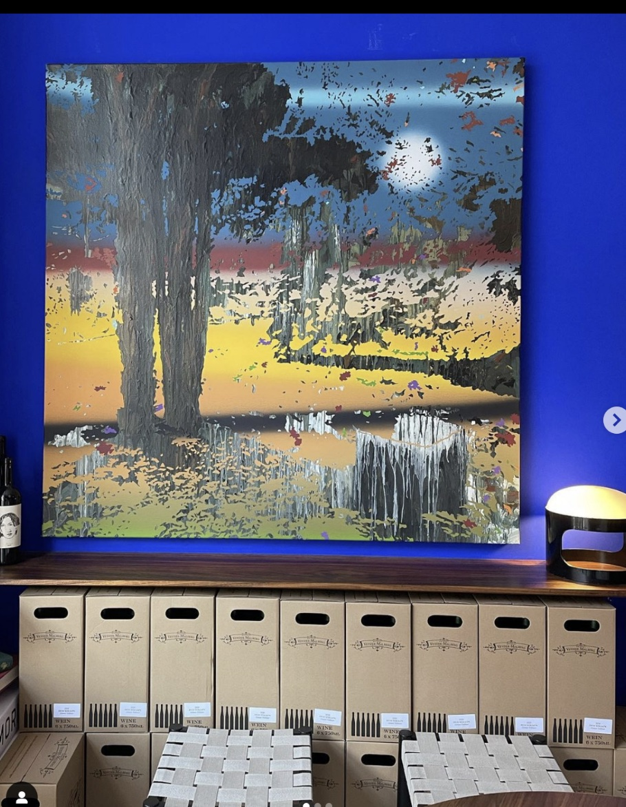
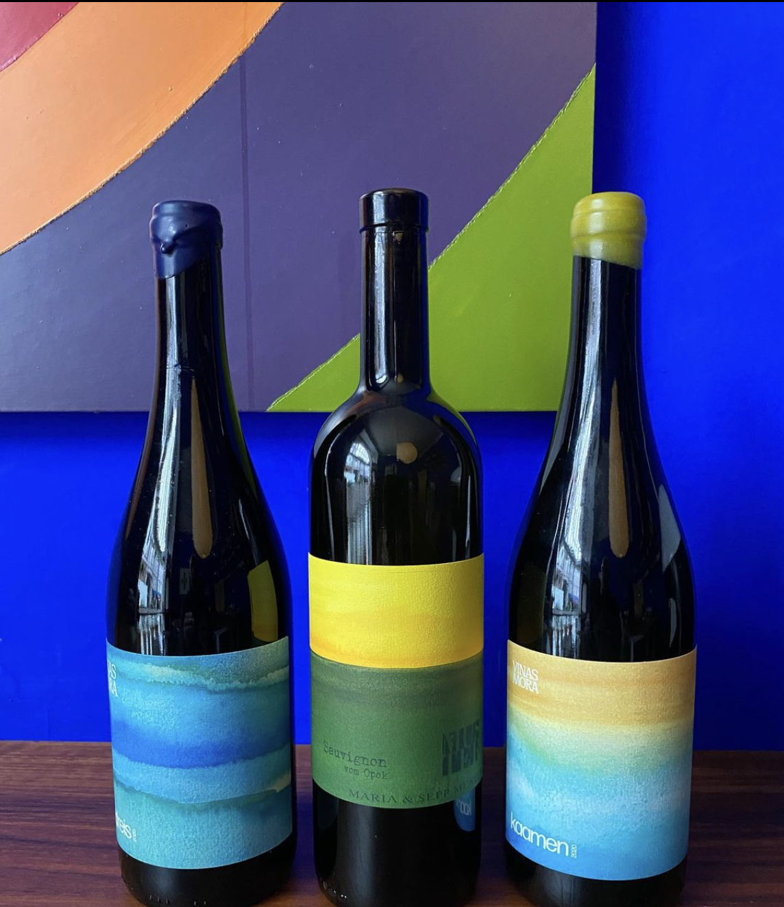
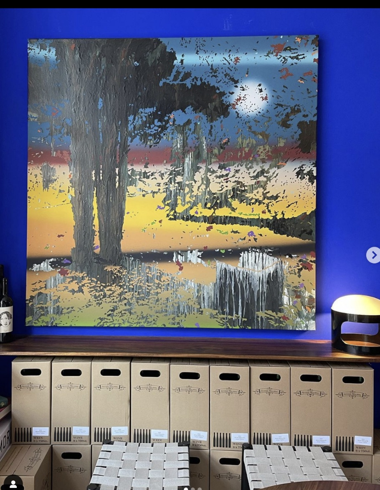
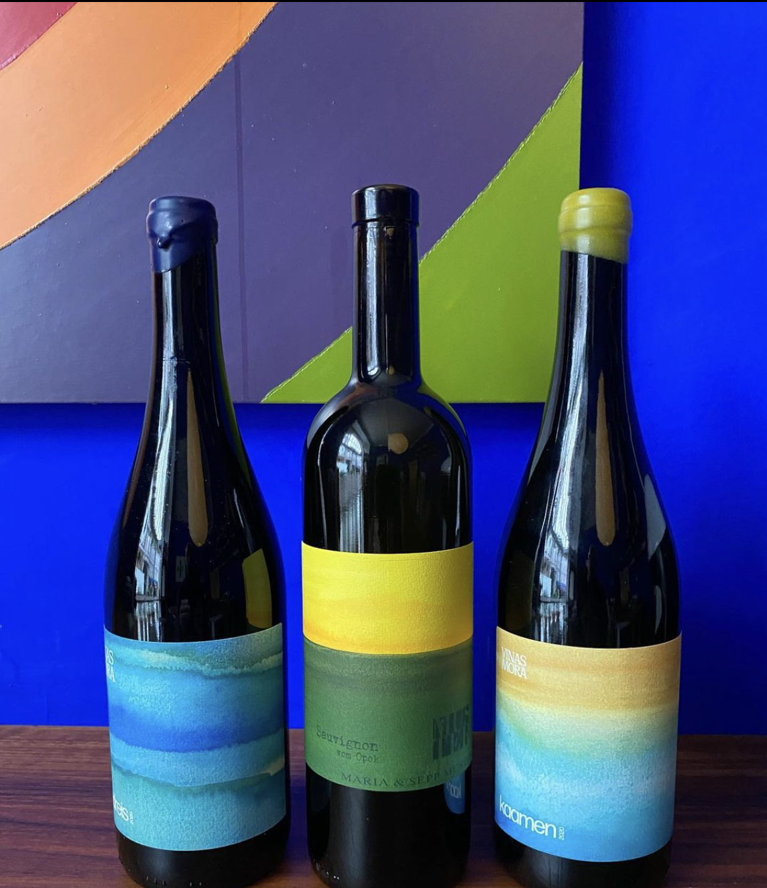

Experience the allure of Lille Blå Vinbar, a lively and colorful new destination for natural wine enthusiasts, brought to you by the talented duo of Sebastian Rind Nellemann and Christian Nedergaard. Renowned for their successful ventures including the popular Ved Stranden 10 wine bar, the esteemed Admiralgade 26 restaurant, and the celebrated Österreich Vin, they have now unveiled their latest venture.
Transforming the space formerly occupied by a paint shop, Lille Blå Vinbar pays homage to its roots by adopting the name inspired by the previous occupant, Byens Farve, and adorning its walls in a dazzling shade of blue.
Embracing their passion for Austrian wines, Lille Blå Vinbar specializes in offering a carefully curated selection of natural, organic, and biodynamic wines from Austria. Immerse yourself in the world of exquisite flavors as you indulge in the remarkable offerings at Lille Blå Vinbar. Prepare to be captivated by the enchanting ambiance and the finest expressions of natural wine.
 


